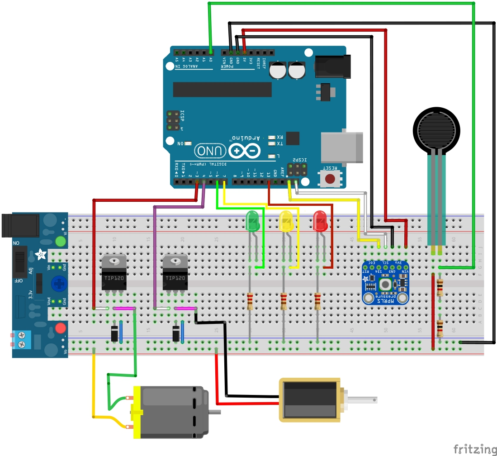
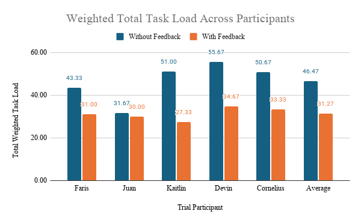

Overview
As medical robotic systems become more prevalent, surgeons have lost physical and tactile feedback, which may increase the risk of surgical complications.
A Surgical End Effector prototype was created with integrated force feedback and capacitive feedback into a surgical tool, relaying pneumatic signals to a wrist brace, supplying remote tactile sensing to the teleoperator.

System Overview
Wrist brace is inflated by a motorized pump, which the Arduino controls to match the pneumatic pressure to the force exerted on the instrument.
Force thresholds were programmed to indicate force required to cut through different tissues.
The capacitive touch sensor triggers an LED and vibration module for visual and haptic feedback.



Results & Outcomes
Developed experiment where users would attempt to perform a series of cuts, scoring the top layer of a skin substitute without cutting through it.
Analyzed with NASA Task Load Index (TLX). Operator's percieved exertion decreased by 32% with addition of the feedback system. Additionally, excess force errors were drastically reduced.
